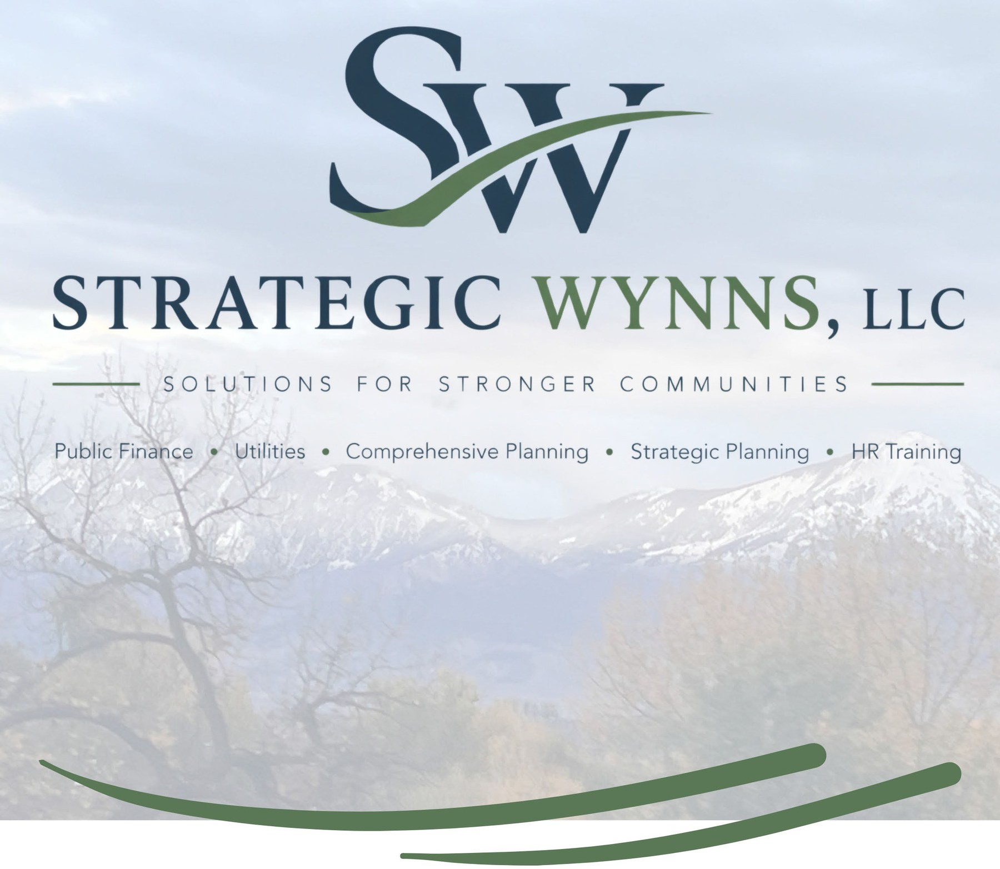

Cover photograph by Stefen Wynn
Public finance and good governance for stronger communities.
Strategic Wynns LLC is an independent consulting practice built on deep experience in public finance, public administration, and good governance. The point of that work is not paperwork. It is what people experience: fair rates, reliable services, straight answers, and public decisions they can trust. We help municipalities, special districts, and utilities manage money responsibly and build systems that hold up, and we bring the same discipline to nonprofits and businesses.
Every engagement ends the same way, too: with systems your people can run long after we are gone. For nonprofits, that means real help finding grants and navigating public processes, so more of every dollar reaches the mission. For businesses, especially those that work with local government, where the law is upheld and the code is enforced, it means practical guidance from someone who has sat on the other side of the counter. For any organization modernizing its systems and processes, it means improvement that lasts. The standard never changes: clear numbers, plain English, and work the people who depend on it can see through, from the first page to the last.
One standard across every engagement: numbers that survive scrutiny, and systems that outlast the work.
Public Finance & Budgeting
Budgets, forecasts, rate and fee studies, and long-range financial planning that keep services funded honestly and give the people paying for them a clear picture of why. Grounded in more than a decade of executive experience and national awards.
Public financeGood Governance & Administration
The policies, controls, and clear roles that keep organizations accountable to the people they serve, and make them easier to lead and easier to trust.
Governance & administrationSystems & Process Improvement
Stable systems and processes your own people can run long after the engagement ends. Modernization and continuous improvement for any organization, public or private, and better service for the customers who depend on them.
Systems & processesGrants & Funding Strategy
Finding and winning grants and low-interest financing, and guiding nonprofits and businesses through the public processes that decide funding, so more resources reach the community and the mission.
Funding strategyThree states. National recognition. One standard.
Stefen Wynn’s public finance work has earned GFOA Distinguished Budget Presentation Awards, and his planning work has been recognized by the American Planning Association, from the Florida Chapter to the Small Town and Rural Division. Strategic Wynns LLC is now scheduling engagements across the country. If your deadlines will not move and your systems need to be stable, the calendar fills fastest in the fall. A first conversation is free.
Built for the way organizations actually work.
Plain English, end to end
Every deliverable is written for the people who rely on it, from the boardroom to the public meeting to the customer reading the bill.
Defensible numbers
Every recommendation traces back to your actual data through a documented approach. No black boxes, no unsupported assumptions, and no decision the people affected cannot follow.
Transparent billing
Clear hourly rates, monthly invoices showing exactly what was done, and a not-to-exceed authorization agreed up front. No surprises on the invoice.
Someone who has sat in your chair
The practice is led by a former city and town manager who has presented the budgets, defended the decisions, and answered the hard questions in public, in person.
Systems that outlast the engagement
The goal is not a report. It is a system your people can run without us: models, templates, policies, and schedules built to be understood and maintained for years.
Both sides of the counter
If you do business with local government, or depend on its processes, we speak both languages: the government side that upholds the law and enforces the code, and yours.
Not sure where to start?
A first conversation is free. Bring the budget, the rates, the grant application, or the process that is stuck.
Start a conversation